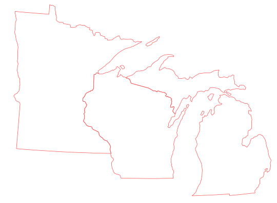
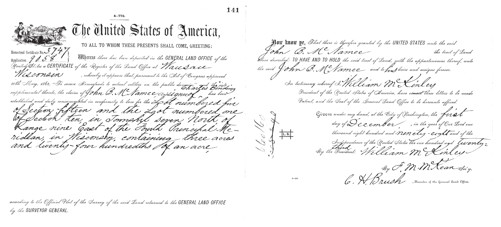
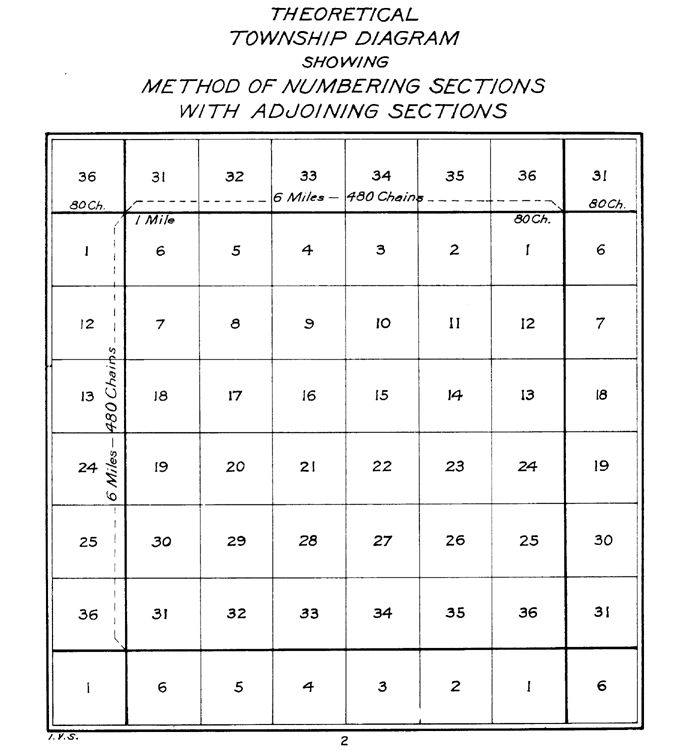
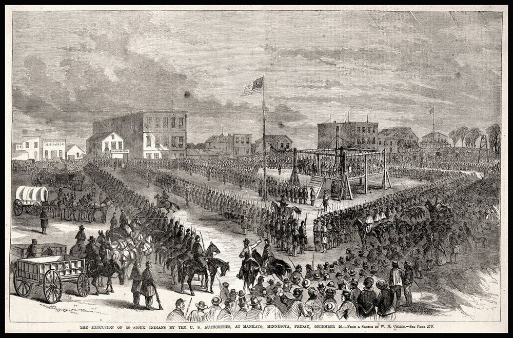

September 20, 2025.
This project maps the spread of homesteads in Michigan, Minnesota, and Wisconsin. Inspired by projects like Land Grab Universities and Homesteading and Indigenous Dispossesion, we created this map to better understand the spatial distribution of homestead parcels in the Upper Midwest, as well as the presence and resistance of Indigenous people in response to these waves of settlement.
The Homestead Act of 1862 allowed settlers to claim up to 160 acres of "public land" from the federal government, essentially for free. To recieve a land title, settlers had to be citizens, or intended citizens, and were required to occupy their parcel for 5 years and make improvements.
Between 1863 and the 1930s, the Homestead Act transfered over 270 million acres from the U.S. government to individual settlers, representing approximately 10% of U.S. land area. Successful homesteads represented 6% of land area in Michigan, 9% in Wisconsin, and 20% in Minnesota.

Land patent recieved through the Homestead Act, issued to John B. McNamee and Charles Binding in Dane County, Wisconsin.
Land distributed by the Homestead Act was exclusively acquired from Tribal Nations through coercive treaties (which often followed violent struggle) and direct land seizure. Once acquired, the land underwent an ideological transformation—from land as relation or kin, to land as property.
Surveying and mapping themselves were key tools in this transformation, measuring and parceling space into easily defineable property lines. In other words, When land was acquired by the U.S., it had to be surveyed prior to settlement. The Public Land Survey System (PLSS) was the method used to survey all land acquired by the U.S. after 1785.


Diagram of how individual 6x6 square mile sections of land were divided through the PLSS.
In the Upper Midwest, violent conflicts such as the U.S. Dakota War—driven by the pressure of settlement, broken treaties, and the imminent starvation of the Dakota people—were used to justify the necessity of dispossession. There was no place for American Indians in the project of American settlement.
Importantly, dispossession didn't end with treaty-making and homesteading. Rather, settler colonialism continues to define how land is managed and accessed.
Despite the violence of settlement, and the legal and ideologically transofrmation of land, American Indians resisted through occupation of their homelands. In Wisconsin, despite repeated attempts at the removal of the Ho-Chunk, they continually returned to live where always had. Therefore, maps of treaties and homesteads cannot possibly represent the complex geographies of Native movement and resistance. As Mishuana Goeman writes: “Unlike the maps that designate Indian land as existing only in certain places, wherever we went there were Natives and Native spaces, and if there weren’t, we carved them out.”
American Indians also occassionally—though rarely—used the Homestead Act itself to acquire or re-acquire land. While the Act makes no explicity reference to race, it was limited by citizenship, a legal status largely foreclosed to American Indians. In 1875, an act of congress extended the Homestead Act to American Indians, though they had to relinquish their tribal affiliations in order to acquire land. An amendment in 1884 lessened requirements for improvements to the land, but also stipulated that parcels were required to remain in trust for 25 years before a land title was distributed. These so-called Indian Homestead Acts were therefore sparsely used, though in Wisconsin were used by both Ho-Chunk and Potawatomi.
Lands titled under the Homestead Act of 1862, including: 96% of homestead parcels in Michigan, 100.1% of homestead parcels in Minnesota, 96% of homestead parcels in Wisconsin. Parcels acquired through the Indian Homestead Acts. Treaty designations and reservation boundaries. 2020 Native populations by county.
The extent of Native interaction with homesteaders, and overall resistance to settlement. Failed homestead attempts.
Our homestead parcel data set was created using data provided by the Bureau of Land Mangement's General Land Office (GLO) records database. While the GLO database lists the amount of data it has, it does not compare this amount to the total amount of homesteads. This means that we had to calculate the missing homesteads using numbers provided by Homestead National Park—which shows there are homesteads missing from the GLO database.
There is no easy way to access bulk data from the GLO database. Instead, we had to create a python script to scrape data off the website. You are able to download the script here. The script allows you to download data from the GLO database for any title transfer authority, not just the Homestead Act, and for any state. The script has three options:
The script will output two .csv files:
With the [selected state]_parcels_edited.csv, you are able to join the generated parcel dataset with our prepared spatial data. The PLSS intersected dataset is the most comprehensive PLSS dataset, though it varies greatly from state-to-state. Michigan, Minnesota, and Wisconsin have good, comprehensive coverage.
Our plss_mi_mn_wi dataset contains a few extra fields to increase ease of joining to the csv file generated by the web scraper. The field loc_code, is present in both files. If you want to join PLSS data from another state, you will need to prepare an appropriate join field.
Once we joined our csv with the PLSS GIS data, we dissolved the file based on the document number, meaning there is a single area for each record.
The treaty dataset is a modified version of the Royce Report, a 1890s report that described treaty-defined reservations and cessions using PLSS language. The Royce report has been digitized. However, the digitized data make no disctinction between the type of land included in the dataset. Specifically, if the land is ceded, a reservation, or if the land was at one time a reservation, and later ceded. These data were added through careful consulation of the original Royce report.
To account for these nuances, three fields have been added:
Our geospatial data can be downloaded as a Geopackage, which includes the following layers (see description of how layers were made in the previous section):
Our Homestead Parcel data can be downloaded as a .csv: